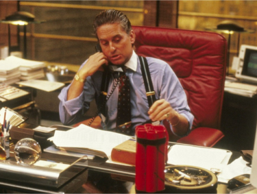
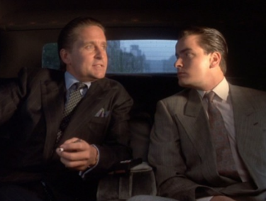

> Discover the Oliver Stone's Filmography
Here’s a movie to watch. Wall Street is first and foremost an iconic street in New York City, the city of your dreams. Stock Exchange District, This mythical name is a brilliant sign of the desire for ambition and success.
This is where the story of the film I chose to present to you begins. Directed by Oliver Stone in 1987, Wall Street tells the story of a Bud Fox, role played by Charlie Sheen, an ambitious junior stockbroker who is eager to succeed on the path that he undertakes. His life is punctuated by the incessant phone calls he makes all day long to convince individuals to invest in more or less profitable shares. Performance is required, She is constantly reminded and hammered by her boss.
A more than ideal opportunity for Bud will give him the opportunity to change his life, learning one morning by consulting his computer that today is the birthday of Gordon Gecko, a famous stockbroker recognized by all. After 59 failed attempts (exactly!) to ask Gecko to meet with his secretary, Bud Fox tries the nerve to walk through without knocking on the door of his office. He thus succeeds in attracting the attention of the master. Bud Fox managed to convince Gordon Gecko to take him under his wing. Gecko noticed Fox’s relentless will to get out of his condition and his desire for success.
He will immediately teach her how to play the game. Fox suddenly takes it one step further. He will rub shoulders with the greatest and the most talented. He changes his social condition. We notice the difference between the father, Carl Fox alias Martin Sheen (also his father in real life!), worker at Bluestar Airlines and living a quiet and uneventful destiny, facing his son, Bud Fox, now Gordon Gecko’s accomplice at the same time as his work He was a telephone salesman, living in a rhythm that was at 200 an hour and bathed in the illegality of his actions. He will be caught up very quickly by his destiny. His actions as well as those of Gecko, who will even try to trap him, will not remain incognito.
From a life of hard work giving no meaning, to a rapid ascent, a radical change of lifestyle to a brutal, almost theatrical fall, this film represents perfectly for me your ambition and your will to succeed. Even the end of the film is important.
A desire to evolve, conquer like a warrior his environment and draw success from it. All this is tempting for someone like you, that's true.
“You are at a stage in your life where you can become whoever you want,” Orelsan said. You can become a Bud Fox or a Jordan Belfort (not to mention only one film), however, don’t burn your wings. A progression doesn’t have a single pattern. It can be fast like taking years, the important thing is to be patient and wait for opportunities, or to provoke them yourself like Fox. Patience is very difficult for you. Everything goes fast today with the Internet and there are certain life patterns you want to free yourself from. Always think about your goal. “If you really want it, you can,” my grandfather says. Make them proud, success is not just for you.
Back to the top !